"사진은 결국 남기는 일이라고 지난달에 적었다. 9월의 목록은 그다음을 묻는다. 남긴 것을 누구에게, 어떻게 넘길 것인가."
9월엔 사진가의 암실이 미술관이 된다. 제리 율스만이 쓰던 확대기 여섯 대와 작업 도구가 김포로 건너와 문을 연다. 대구는 지역 사진사의 뿌리에서 오늘의 작가들로 이어지는 계보를 그리고, 대전은 '노동' 한 단어로 도시 열 곳을 열이틀간 전시장으로 쓴다. 인천은 이레만 연다. 이번 달은 서울 바깥이 바쁘다. 마감이 급한 것부터 적는다.
이번 주에 닫힌다
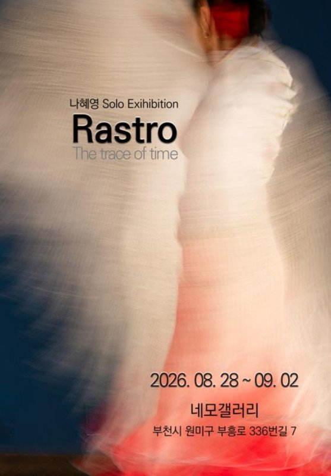
나혜영, 〈Rastro〉
네모갤러리. 8.28 – 9.2.
2015년 여름 스페인 그라나다의 작은 타블라오에서 처음 마주친 플라멩코가 출발점이다. 'Rastro'는 스페인어로 흔적, 자취를 뜻한다. 춤이 끝난 자리에 남는 것을 좇았다. 이번 주 수요일이 마지막이다.
한경국립대학교 대학원 사진·디자인전공 동문전, 〈시선연대〉
노들갤러리 1관. 8.22 – 9.2.
"우리는 모두 다른 곳을 바라본다"는 문장으로 묶인 동문 단체전. 누군가는 삶에서 가장 가까운 풍경을 기록하고, 누군가는 그 반대편을 본다. 나혜영과 같은 날 닫히니 서울 동선으로 묶기 좋다.
9월, 김포에서
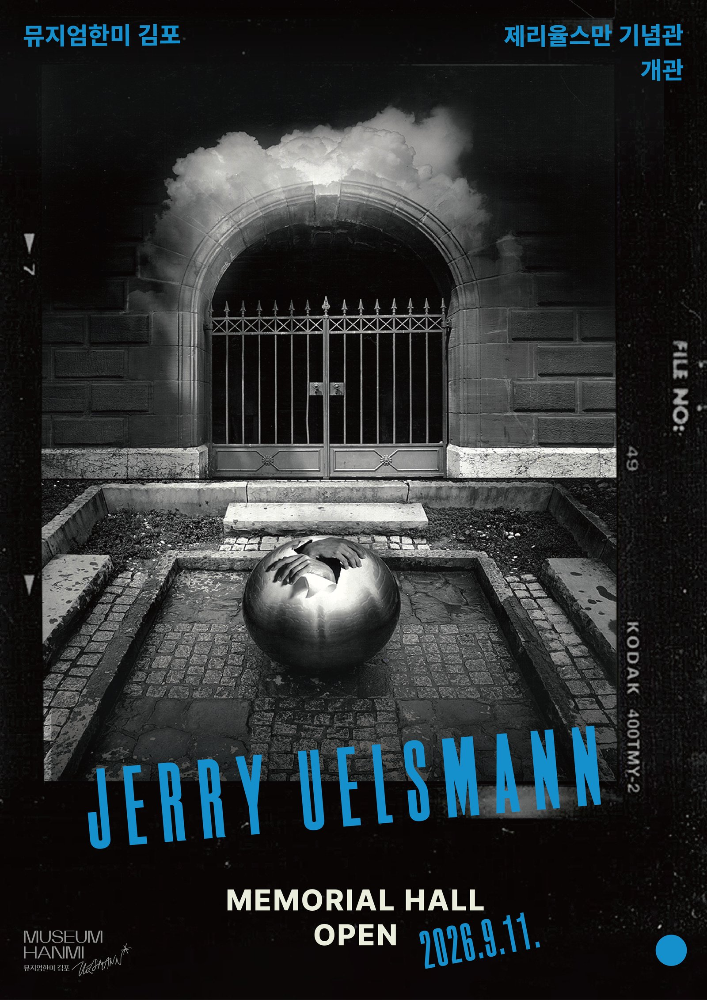
뮤지엄한미 김포 제리 율스만 기념관 개관
뮤지엄한미 김포. 9.11(금) 개관.
이달의 가장 큰 소식은 전시가 아니라 공간이다.
제리 율스만(Jerry Uelsmann, 1934–2022)이 평생 다듬은 것은 조합인화(combination printing)다. 네거티브 여러 장을 확대기 여러 대에 나눠 걸고, 한 장의 인화지 위에 차례로 겹쳐 올린다. 19세기에 레일랜더와 로빈슨이 하던 방식을 1960년대에 다시 꺼내 자기 것으로 만들었다. 합성이라는 말이 디지털의 것이 되기 훨씬 전에, 그는 암실 안에서만 가능한 초현실을 만들었다.
확대기 대수를 굳이 세는 데는 이유가 있다. 율스만의 암실에는 확대기가 일곱 대 놓여 있었고, 한 장을 완성하려고 열 대 넘게 동시에 쓴 적도 있다. 그에게 확대기 수는 장비 목록이 아니라 작업 방식 자체였다. 이번에 문을 여는 기념관에는 그가 생전에 쓰던 확대기 여섯 대와 작업 도구, 스튜디오와 암실 집기가 옮겨져 다시 놓인다. 사진 몇 점을 걸어두는 자리가 아니라는 뜻이다.
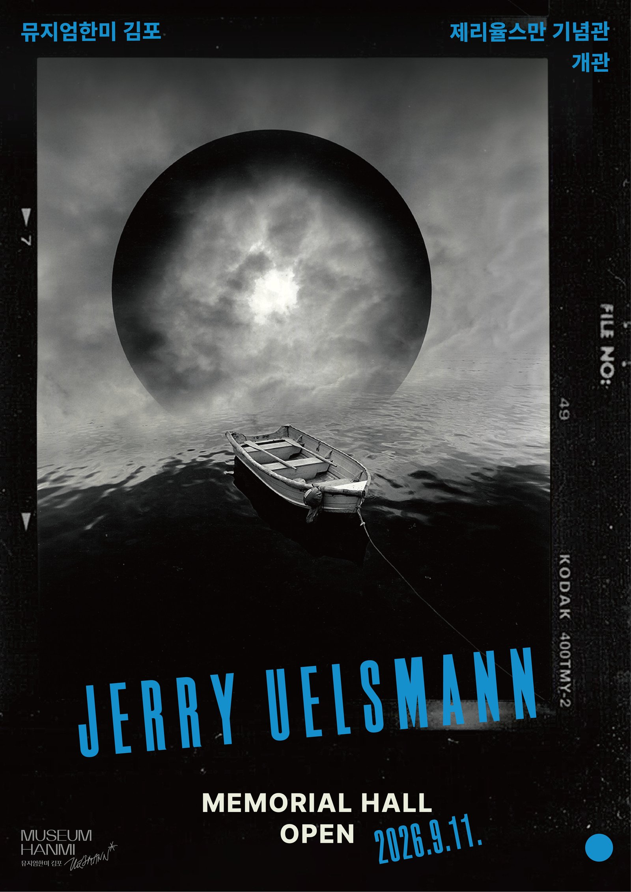
상설전과 기획전으로 대표작과 아카이브를 함께 선보이고, 아날로그 인화를 직접 해보는 암실 체험 프로그램도 운영할 예정이라고 한다. 필름으로 찍는 사람은 계속 느는데, 정작 인화는 어디서 배웠을까. 거장이 실제로 쓰던 암실이 상설 체험 공간으로 열린다는 소식은 전시보다 인프라에 가깝다. 김포 가현리, '아름다운 언덕'이라는 지명 그대로 언덕 위에 한옥 가현헌과 정원, 그리고 기념관이 함께 앉아 있다.
암실 체험 프로그램의 운영 방식과 예약 방법은 개관 즈음 공지될 예정이다.
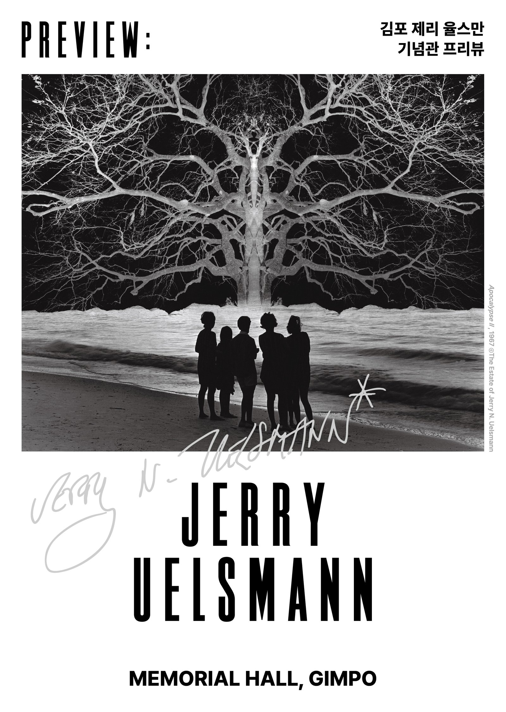
〈김포 제리 율스만 기념관 프리뷰〉
뮤지엄한미 삼청별관. 5.22 – 9.30.
김포 개관에 앞서 봄부터 열려온 프리뷰전. 율스만의 대표작과 함께 그가 한국에 왔을 때 안동과 제주에서 직접 찍은 이미지, 미술관 소장품을 촬영해 만든 작품을 선보인다. 김포 작업실을 옮겨 짓는 설계 과정과 현장 영상도 함께 공개된다.
9월 11일부터 30일까지 딱 스무 날, 삼청의 프리뷰와 김포의 기념관이 겹친다. 율스만을 제대로 보려면 이 구간이다.
9월, 서울에서
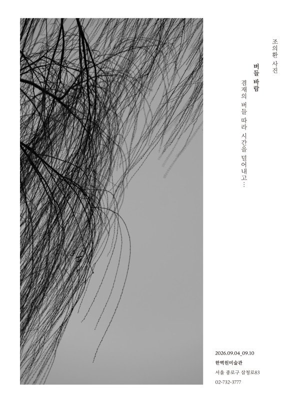
조의환, 〈버들바람〉
한벽원미술관. 9.4 – 9.10.
겸재 정선이 삼백 년 전에 그린 경교(京郊)의 버들을, 작가가 사진으로 다시 찾아간다. 그림이 있던 자리에 카메라를 세우는 작업이다. 금요일에 열어 다음 주 목요일에 닫는다. 딱 일주일이다.
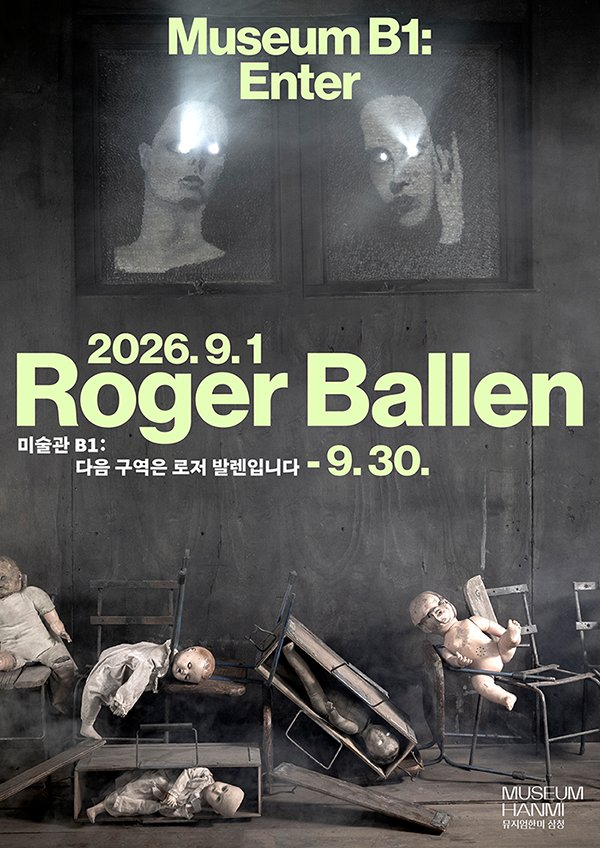
〈미술관 B1: 다음 구역은 로저 발렌입니다〉
뮤지엄한미 삼청 본관 B1. 9.1 – 9.30. 무료.
뉴욕에서 태어나 1970년대부터 남아공 요하네스버그에 자리 잡은 로저 발렌(Roger Ballen, 1950– )의 영상 작업 일곱 편을 지하 1층 전관에서 상영한다. 〈I Fink U Freeky〉(2012)부터 올해 만든 〈Spirits and Spaces〉(2026)까지. 키아프와 프리즈 서울 기간에 맞춰 열리는 10월 개인전의 예고편이다.
흑백 필름과 연출된 스튜디오로 무의식의 풍경을 만들어온 작가라, 사진보다 영상이 먼저 오는 순서가 오히려 흥미롭다. 관객이 공간을 돌아다니며 보는 구성.
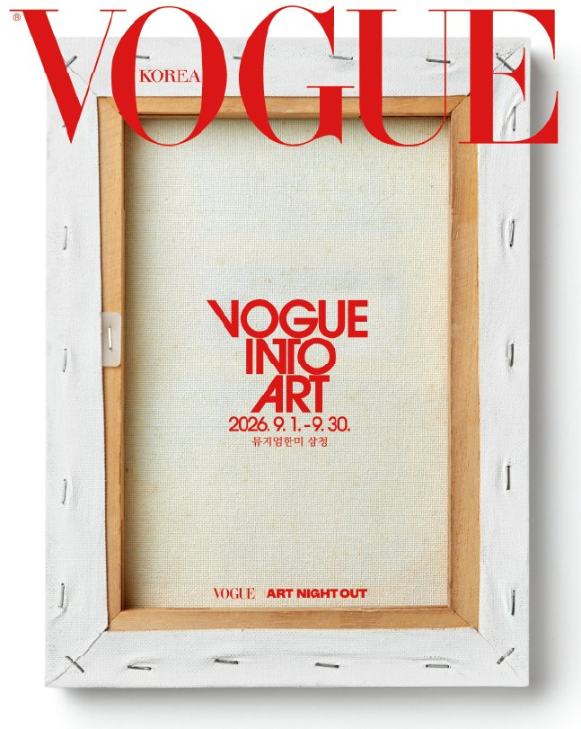
〈보그 인투 아트〉
뮤지엄한미 삼청 본관. 9.1 – 9.30. 무료.
보그 코리아 창간 30주년 기념전. 지난 30년간 나온 『보그』 커버를 캔버스 삼아 국내외 작가 33인이 각자의 방식으로 다시 만든 33점을 건다. 커버 백여 개를 겹쳐 한 장으로 만들거나, 오려낸 잡지를 켜켜이 쌓아 입체로 세우거나.
참여 작가 명단에 구본창이 있다. 인쇄물이 어떻게 다시 작품이 되는가를 보는 자리라, 종이로 만들어지는 것들에 관심 있다면 볼 만하다.
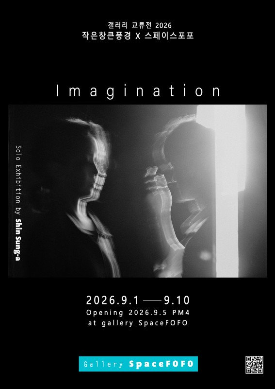
신성아 〈상상: Imagination〉 · 최방원 〈눈동자 속의 계절〉
스페이스포포 갤러리. 9.1 – 9.20.
작은창큰풍경과 스페이스포포의 교류전. 두 작가의 개인전이 한 공간에서 나란히 열린다.
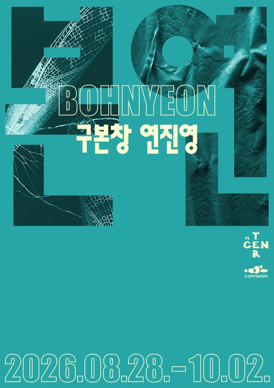
구본창·연진영, 〈본연〉
PS CENTER (서울 중구 창경궁로5다길 18, 3층). 8.28 – 10.2. 무료. 일·월·추석 당일 휴관.
'본연'은 구본창의 '본'과 연진영의 '연'을 나란히 세운 이름이자, 존재의 근원을 뜻하는 말이다. 사진가와 조각가, 마흔 살 차이가 나는 두 사람이 각자의 매체로 표면과 물성, 시간의 층위를 파고든다. 1953년생과 1993년생이다.
연진영은 패딩과 에어백, 덕트와 텐트 천처럼 제 기능을 잃은 산업 재료를 모아 해체하고 바느질로 다시 엮는다. 기획은 이 만남을 "동시대 미술이 제안하는 새로운 배니타스"라고 불렀다.
RELATED · 단독 기사 구본창, 사라지는 것들을 붙드는 사진 7월에 우리가 쓴 그 사진가가 이번엔 조각과 마주 선다. 붕대와 실, 낡은 비누와 조선 백자를 찍어온 사진 세계를 따로 정리한 기사가 있다. → RELATED · 단독 기사 마틴 파 〈We Are Martin Parr〉, 10월 18일까지 서울시립 사진미술관 7월에 문을 연 회고전이 9월에도 이어진다. 무료. 전시 규모와 주요 시리즈는 단독 기사로 정리해두었다. →9월, 대구에서
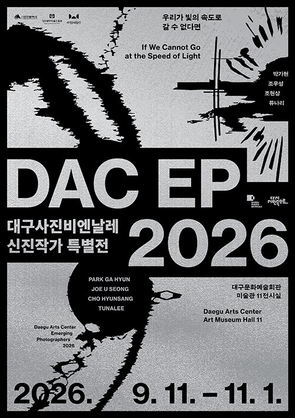
2026 대구사진비엔날레 특별전
대구문화예술회관 미술관 6~12전시실. 9.11 – 11.1.
올해는 본 비엔날레가 없다. 제11회는 2027년 10월로 예정돼 있고, 예술감독으로 석재현 아트스페이스 루모스 대표가 지난 8월에 선임됐다. 그 공백을 특별전 세 개가 채운다.
〈붉은 깃발 별이 되어 — 대구사진의 아방가르드와 그 이후〉는 6~10전시실. 양성철의 연작에서 전시명을 빌려왔다. 정치와 이념에 갇혀 있던 '레드'를 예술적 열정과 존재론적 해방의 색으로 바꿔놓은 사진가다. 그 실험 정신을 뿌리로 삼아 서진은·홍준호·장용근·우창원 네 작가의 작업을 한 공간에 짠다. 지금까지의 대구 사진사 시리즈는 자료를 모으고 연구하는 아카이브에 가까웠다. 이번엔 그 유산을 동시대와 정면으로 교차시킨다.
〈DAC EP 2026 — 우리가 빛의 속도로 갈 수 없다면〉은 11전시실. 공모로 뽑은 신진작가 박가현·조우성·조현상·튜나리 네 사람이 빛과 시간, 기억과 물질, 디지털 환경을 각자의 방식으로 다룬다. 네 개의 독립된 궤도가 한 전시 안에서 교차하는 구성.
세 번째 특별전 〈대구 사진, 시간을 잇다〉는 이름만 공개됐고 세부는 아직 올라오지 않았다.
'사진의 수도'를 자처해온 도시가 자기 역사를 정면으로 다루는 전시다. 이런 자리는 흔하지 않다.
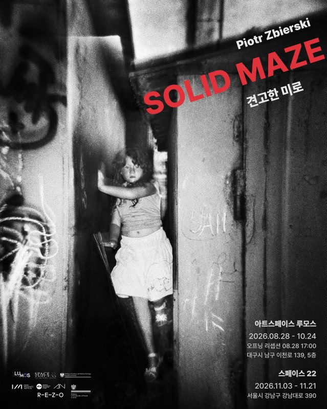
피오트르 즈비에르스키, 〈SOLID MAZE 견고한 미로〉
아트스페이스 루모스. 8.28 – 10.24.
지난달 이재갑의 〈모서리〉가 걸렸던 그 자리에 폴란드 사진가의 개인전이 들어섰다. 10월 말까지라 대구에서 가장 여유 있는 전시다. 9월 11일 이후에 가면 비엔날레 특별전과 하루에 묶인다. 2027년 비엔날레의 예술감독이 이 갤러리를 이끄는 사람이니, 대구 사진의 다음 방향을 미리 보는 셈 치고 들러도 좋다.
9월, 대전에서
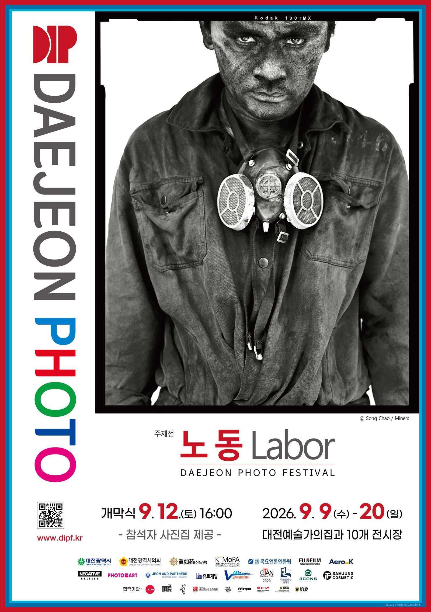
제3회 대전포토페스티벌, 〈노동〉
대전예술가의집(주제전) 외 대전 시내 10개 전시장. 9.9(수) – 9.20(일).
주제가 '노동' 한 단어다. 세계 10개국 108명이 참여하고, 주제전에만 16명이 걸린다. 개막식은 9월 12일 토요일 오후 4시, 대전예술가의집 3층 중정.
눈여겨볼 건 이틀치 프로그램이다. 12일 오전 11시 퍼블릭 토크는 '글로벌 사우스와 노동'을 다루고, 노부오 타카모리가 기조연설을 맡는다. 13일 일요일에는 아티스트 톡 두 개가 연달아 있다. 오후 2시 양승우의 〈야꾸자〉, 오후 3시 이경우의 〈적외선의 세계〉. 야쿠자 공동체를 오래 흑백 필름으로 기록해온 사진가와, 눈에 보이지 않는 파장을 필름에 앉히는 작업. 하루에 둘 다 들을 수 있다.
한 가지 주의. 대전갤러리는 9월 17일에 먼저 닫는다. 갤러리 탄은 9월 30일까지 이어진다.
9월, 인천에서
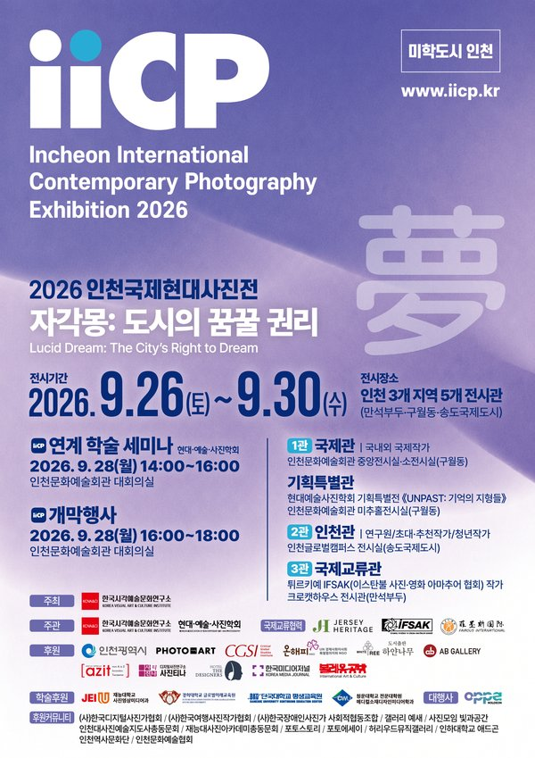
2026 인천국제현대사진전, 〈자각몽: 도시의 꿈꿀 권리〉
인천 3개 지역 5개 전시관. 9.25(금) – 10.1(목). 오전 10시 – 오후 6시. 무료. 주최 한국시각예술문화연구소.
산업화와 개항의 기억이 남은 만석부두, 지금의 문화 중심인 구월동, 미래도시를 자처하는 송도. 세 곳을 하나의 이야기로 잇는다.
이번 전시의 무게중심은 클로드 카엉(Claude Cahun)이다. 영국 저지섬의 저지 헤리티지 후원으로 대표작이 인천에 온다. 1894년에 태어나 1954년에 죽은 이 프랑스 작가는 젤라틴 실버 시대에 이미 성별과 자아의 경계를 자기 얼굴로 실험했다. 〈나는 훈련 중이니 키스하지 마세요〉(1927) 같은 자화상이 백 년 뒤에야 제대로 읽히기 시작한 사람이다.
구월동 인천문화예술회관 중앙전시실에서는 국제작가전과 인천 레전드전(고 김용수)이, 같은 건물 미추홀전시실에서는 현대예술사진학회 기획특별전 〈UNPAST: 기억의 지형들〉이 열린다. 이필 기획으로 성능경·이재갑·변순철·윤정미 등 11명. 송도 인천글로벌캠퍼스는 인천 작가들, 만석부두 크로캣하우스는 튀르키예 İFSAK 작가 26인.
이레다. 9월 25일 금요일에 열어 10월 1일 목요일에 닫는다. 연계 학술 세미나와 개막행사는 28일 월요일 오후, 인천문화예술회관 대회의실.
9월, 안동에서
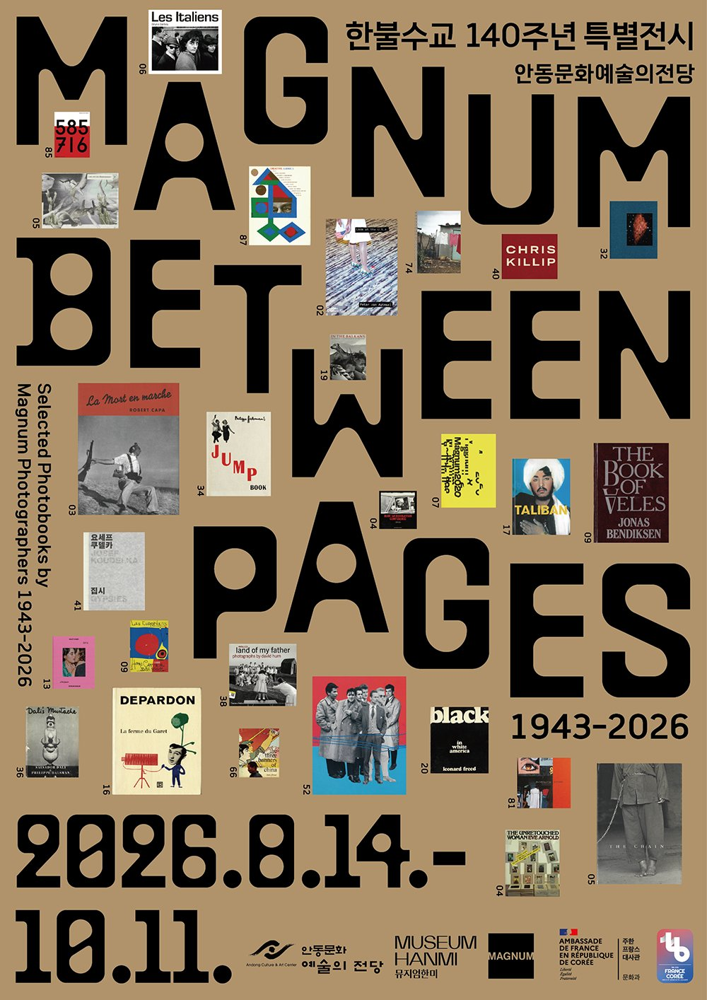
〈Magnum Between Pages 1943–2026〉
안동문화예술의전당. 8.14 – 10.11.
안동문화예술의전당과 뮤지엄한미가 함께 주관하고, 뮤지엄한미와 매그넘 포토스가 함께 기획했다. 한불수교 140주년 기념전이다. 지난해 뮤지엄한미 삼청에서 열렸던 〈포토북 속의 매그넘〉을 다시 구성했다.
매그넘의 대표 포토북 90여 권과 오리지널 프린트 130여 점이 나오는데, 진짜는 그 옆이다. 더미북과 플랜 시트가 원본 프린트와 함께 걸린다. 사진가가 찍은 이미지가 어떤 순서로 배열되고 어떻게 편집·디자인되어 한 권의 책이 되는지, 그 중간 과정을 통째로 보여준다. 사진집을 만들어보려는 사람이라면 여기가 올해의 전시다.
동선 메모
서울은 9월 첫 주가 갈린다. 네모갤러리와 노들갤러리가 9월 2일 같은 날 닫고, 한벽원미술관은 4일에 열어 10일에 닫는다. 뮤지엄한미 삼청은 1일에 두 개를 한꺼번에 연다. 삼청 본관 두 전시에 삼청별관 율스만 프리뷰까지 한 건물군에서 세 개라 반나절이면 충분하다. 여기서 PS CENTER(중구)까지 이어 붙이면 하루가 찬다.
김포는 9월 11일 이후. 삼청별관 프리뷰가 30일에 닫히니 그 전에 삼청과 김포를 같은 날 묶는 게 가장 알차다.
대구는 9월 11일에 특별전 세 개가 한꺼번에 열린다. 루모스까지 더하면 하루. 11월 1일까지 있으니 급할 건 없다.
대전은 열이틀뿐인데 대전갤러리가 17일에 먼저 닫는다. 아티스트 톡을 노린다면 13일 일요일 하루가 정답이다.
인천은 이레. 세 지역에 흩어져 있어 하루에 다 보긴 어렵다. 구월동을 먼저 잡고, 남으면 송도와 만석부두.
안동은 10월 11일까지라 여유롭다. 삼청과 같은 기획팀이 만든 전시니 삼청을 먼저 보고 안동으로 가면 맥락이 이어진다.
그리고 이번 달엔 구본창을 두 번 만나게 된다. PS CENTER에서는 조각가와 마주 선 두 사람 중 하나로, 뮤지엄한미에서는 서른세 명 중 하나로. 같은 사람이 전혀 다른 크기로 놓인 두 자리를 나란히 보는 것도 재미다.
목록을 다시 훑어보면 이번 달은 전부 넘기는 방법에 관한 것이다. 확대기 여섯 대를 태평양 건너 옮겨오는 방법, 지역 사진사의 뿌리를 오늘의 작가들에게 잇는 방법, 사진 여러 장을 한 권의 책으로 묶는 방법. 남기는 데서 멈추지 않고 다음 사람 손에 쥐여주는 일까지가 9월의 목록이다.